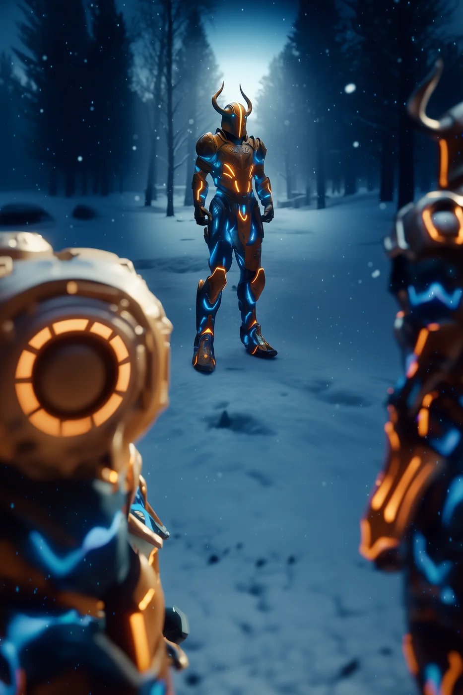

©
©

Omirae
North Marauder · Recruit
Omirae sees the world from two angles at once, and spots every enemy hiding in the twilight. The Dusk Glint hits hard, and harder still against anyone already drained. Around the fire of the Longhouse, Omirae is the one who tells the Marauders what is coming.